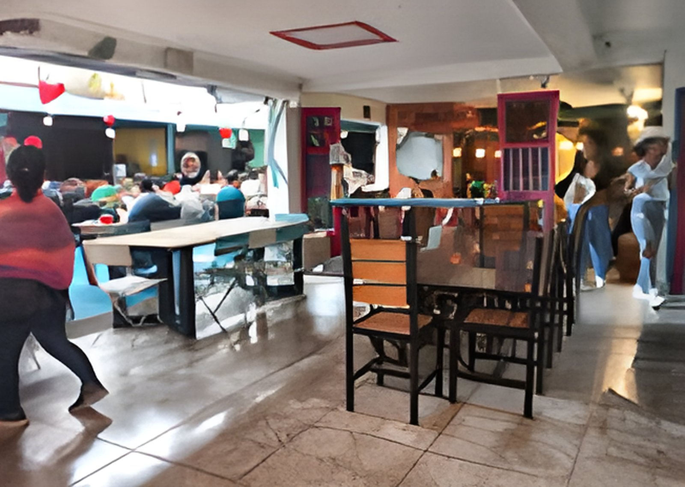
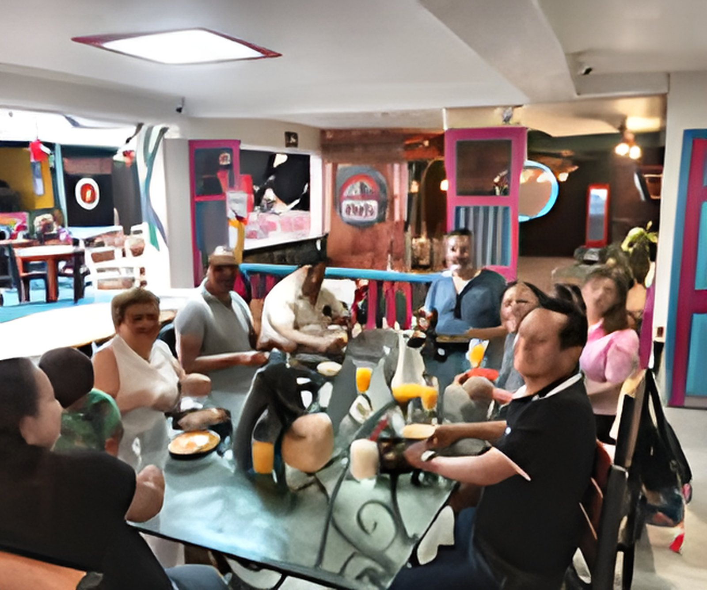
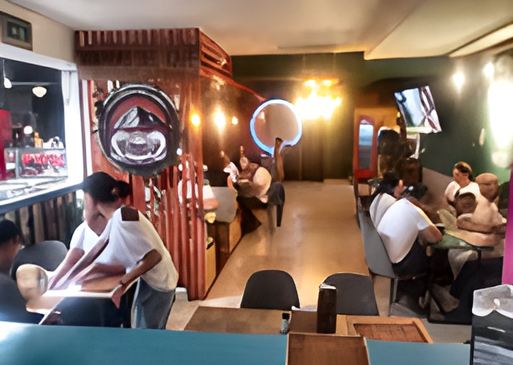
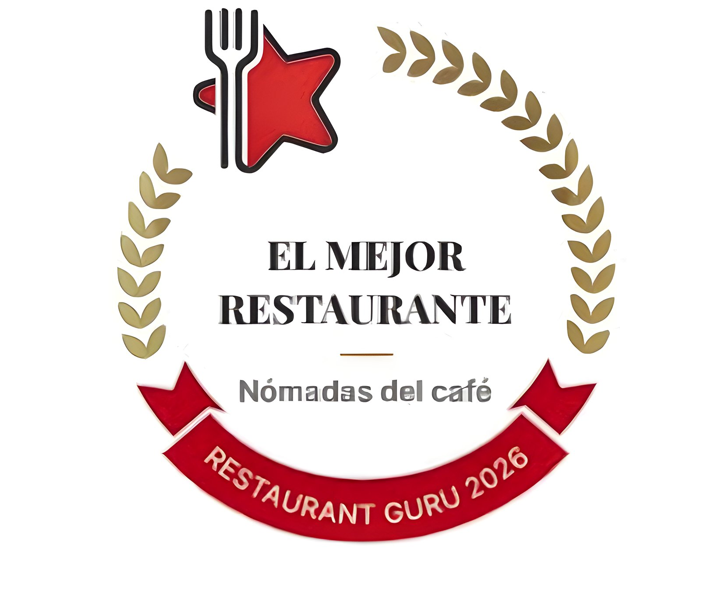

Cocina típica del Quindío, café de origen y cócteles, en una casa de balcones de colores a dos cuadras del parque principal de Filandia, Quindío.



En Nómadas del Café recibimos a viajeros y vecinos como en casa: barandas de colores, mesas de madera y la calidez de la cultura quindiana.
Preparamos platos típicos con ingredientes de la región: bandeja paisa, fríjoles, patacón, trucha, carnes al estilo de la casa y, claro, un buen café de origen cultivado en estas montañas.
En 2026 Nómadas del Café recibió dos reconocimientos de Restaurant Guru: El mejor café en Filandia y El mejor restaurante. Gracias a cada viajero y a cada vecino que nos eligió. ¡Este premio es de ustedes!


Mesas llenas, celebraciones, buena conversación y la sazón de nuestra cocina.

¿Cumpleaños, aniversario, grado o reunión con los tuyos? Tú pones las ganas de celebrar y nosotros nos encargamos del resto: decoramos tu mesa a tu gusto y preparamos cada detalle para que solo te preocupes por disfrutar.
📅 Manejamos reserva anticipada: escríbenos con tiempo y aseguramos tu mesa.
Reservar mi celebración
Despide el año con una experiencia de alta cocina colombiana servida en 4 tiempos, en el ambiente cálido de Nómadas del Café.
Cupos limitados. Escríbenos para conocer el menú completo, el valor y reservar tu mesa.
Reservar mi cena
Mojitos, margaritas, piña colada y los cócteles de la casa para compartir mientras cae la tarde en Filandia. Pregunta por la promo en tu sede.
Puertas pintadas a mano, música, una luna para soñar y paredes llenas de color, al mejor estilo de Filandia.
Viajeros de todo el mundo y familias de la región ya hacen parte de la historia de Nómadas del Café.
“…los tacos de birria más ricos que he comido en mi vida”
Ana E. · Tripadvisor“Me encantó la sobrebarriga en salsa criolla”
Christian A. · Tripadvisor“…un ambiente muy familiar y tranquilo para comer y platicar.”
Lorena H. · TripadvisorDos casas, la misma sazón. Elige la que te quede mejor.
🚫 Los jueves descansamos: ambas sedes cerradas.